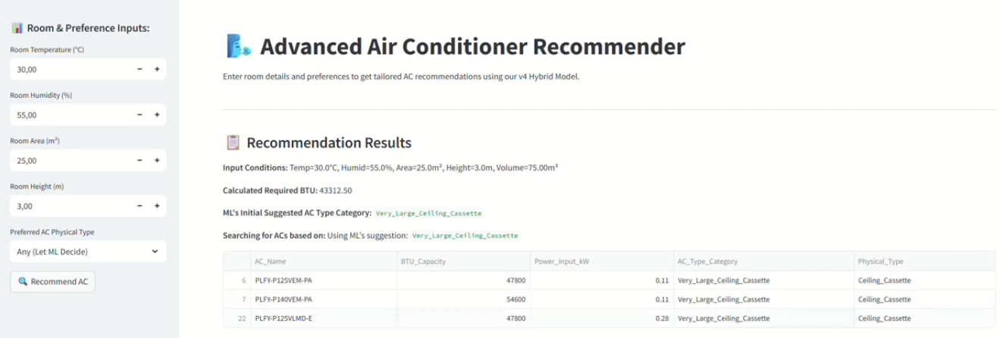

AC Type Recommendation System
A smart system that recommends the most suitable air conditioner model based on room conditions, helping users make informed decisions effortlessly.
View on GitHubProject Goal
The goal of this project is to provide users with a reliable recommendation for air conditioner models based on room size, temperature, humidity, and ceiling height. The system predicts the optimal AC type to maximize comfort and efficiency.
The Brief & Challenge
Selecting the right air conditioner can be tricky, especially when considering room volume, height, and environmental factors. Off-the-shelf recommendations often ignore nuances that impact efficiency and user comfort.
The challenge was to design a system that interprets room parameters and outputs a clear, actionable AC recommendation while remaining understandable for everyday users.
Process & Outcome
The project uses a Random Forest model trained on a dataset combining AC catalog specs and room condition samples. Inputs include room area, height, temperature, and humidity. AC models are mapped to physical types for clear recommendations.
The system achieves accurate predictions with a train-test split evaluation and standard classification metrics. A Streamlit prototype allows users to input room conditions and get real-time recommendations.
The right AC isn’t just about cooling power. It’s about matching the model to your room’s unique environment while upholding energy efficiency.
Sample Workflow
The demo below illustrates how room data is processed to generate AC recommendations. Full notebooks and evaluation reports are available on GitHub.
 Demo